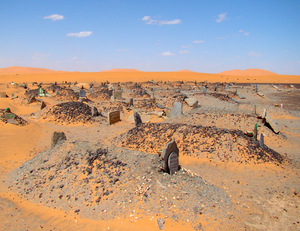
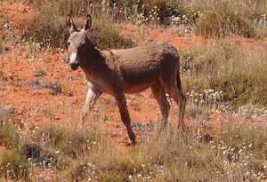
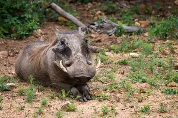
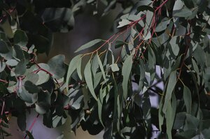

(noun male)
earth
mountain [ορος]
community of hermits, monastery
cemetery in desert
as adj of the hill, desert, so wild
community of hermits, monastery
cemetery in desert
as adj of the hill, desert, so wild




1: mountain, 2: community of hermits, monastery, 3: cemetry (in desert), 4: (as adj.) of the hill, desert (so wild)
complete
| ⲣⲙⲛⲧ., ⲣⲉⲙⲛⲧ. | mountain man2393 | Crum: 441a | |||||||
| ϩⲁⲛⲧ. S
ⲁⲛⲧⲱⲟⲩ, ϩⲟⲛⲧⲱⲟⲩ B |
mountainous country [ορεινη]2394 | Crum: 441b | |||||||
See also:
| view | ⲕⲁⲗⲁⲙⲫⲟ B plural: ⲕⲁⲗⲁⲙⲫⲱⲟⲩ B | (noun female) hill, often paral ⲧⲱⲟⲩ [βουνος, ορος]2842 |
| view | ⲧⲁⲗ, ⲧⲟⲗ S ⲑⲁⲗ B | (noun male) heap, hillock [βουνος]1583 |
| view | ϩⲱⲡ, ϩⲱⲃ B | (noun) horn [κερας]2230 |
| view | ⲥⲓⲃⲧ SAF | (noun female) hill, often paral ⲧⲟⲟⲩ [βουνος, πετρα]1383 |
| view | ϣⲱⲱⲙⲉ, ϣⲱⲙⲉ S ϣⲱⲙⲓ B | (noun female) cliff, precipice [κρημνος]1921 |
| view | ϫⲁ(ⲁ)ϫⲉ, ϫⲁϫⲱ†, ϫⲁϫⲱⲟⲩ† S | (verb) intr: be hard, rough
qual: [σκληρος, τραχυς, αυθαδης] as nn m adj2496 |